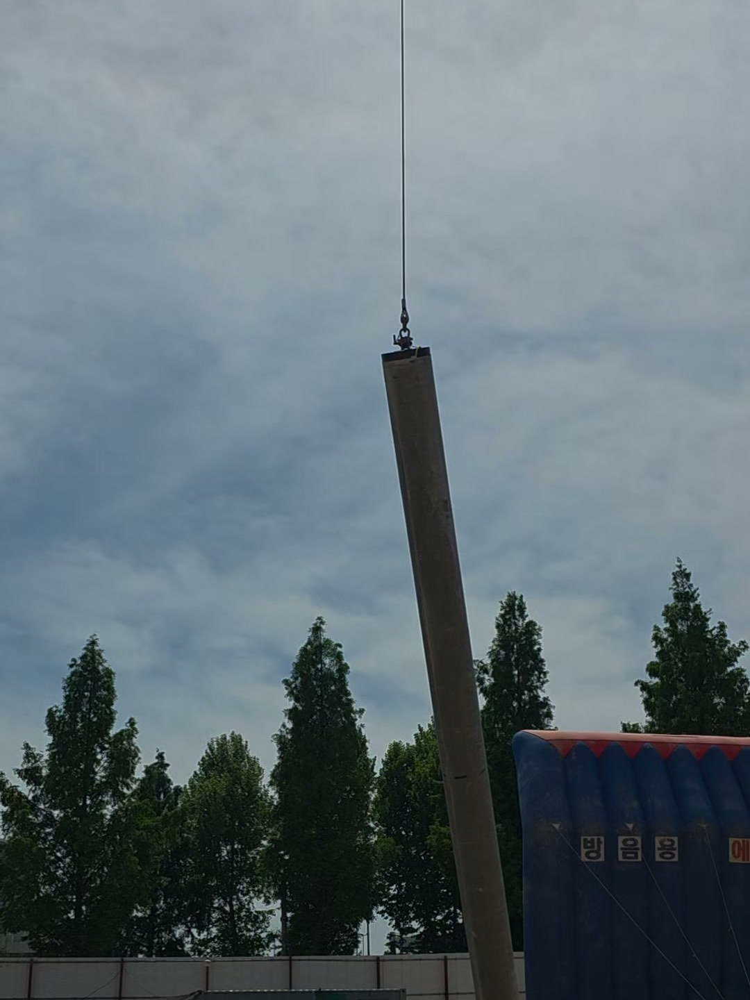
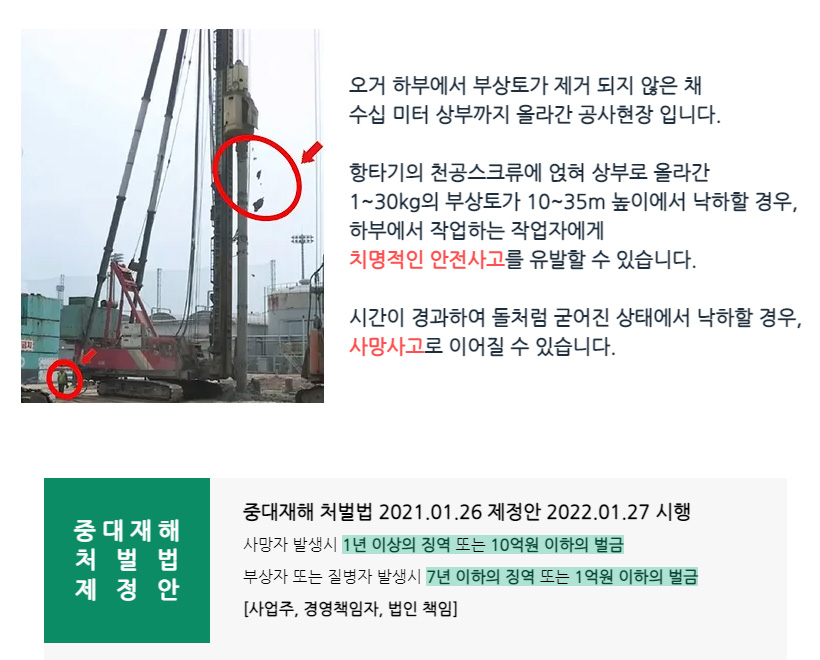
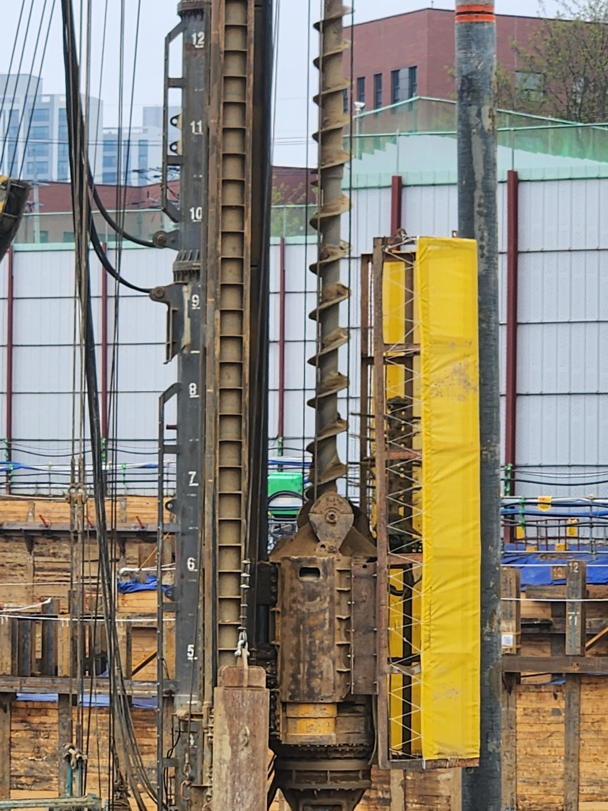
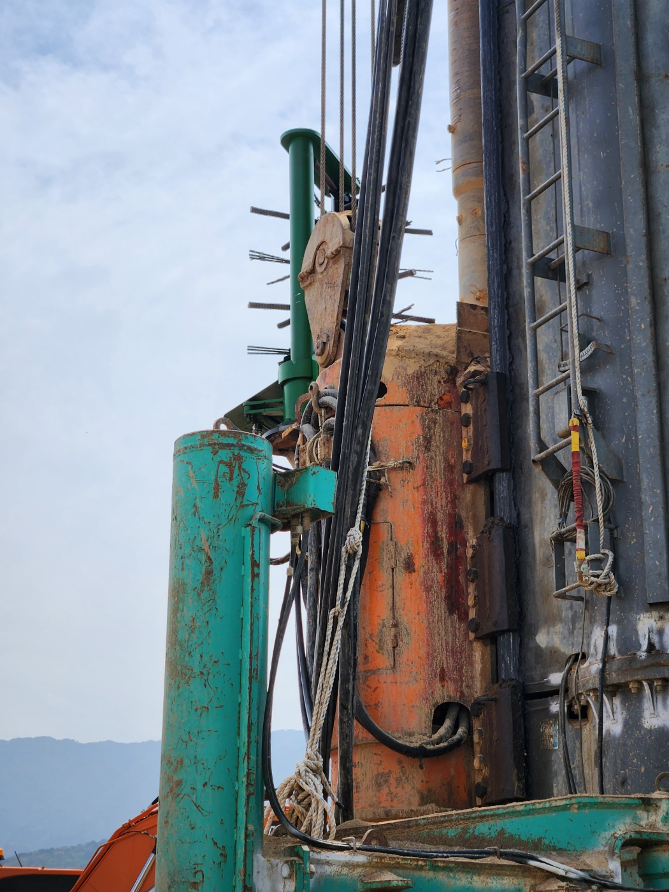
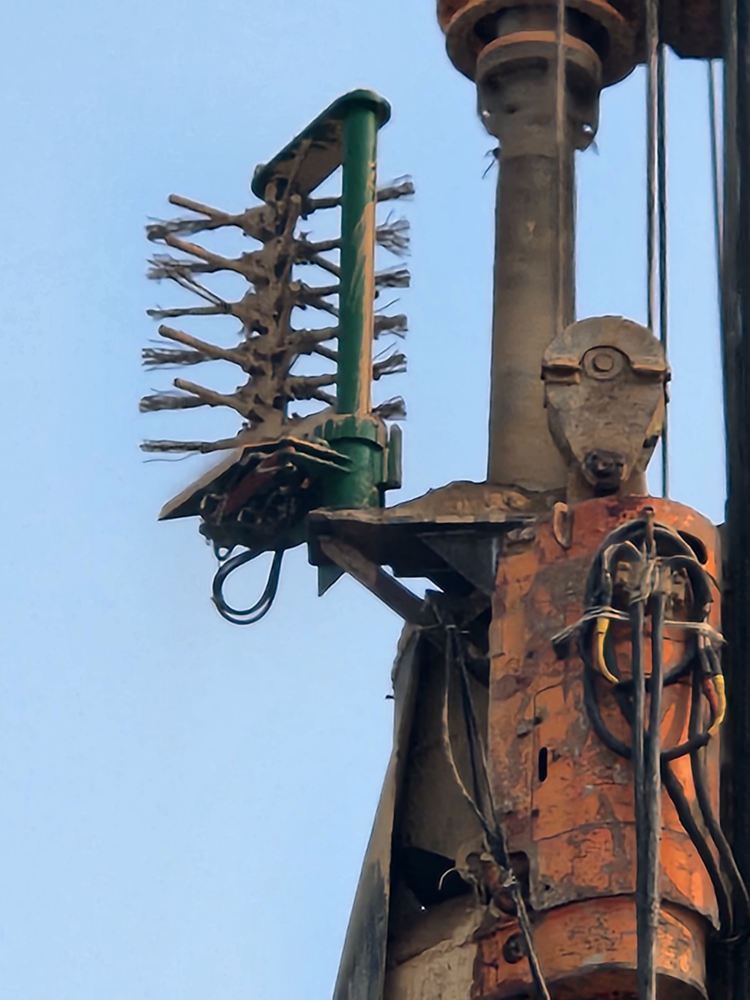

파일인양장치 & 부상토제거장치로
건설 현장의 안전을 지킵니다
1985년부터 이어온 파일기초 장비 제조 경험을 바탕으로, 태경산업은 크레인 파일 인양 사고를 막는 파일인양장치와 항타기 낙하물 사고를 막는 부상토제거장치, 두 안전장치를 특허 기술로 공급합니다.
태경산업 특허 안전장치 라인업
현장 유형에 맞는 안전장치를 선택하세요
왜 파일인양장치가 필요한가요?
대구경 파일·PHC파일을 크레인으로 인양하는 과정에서, 걸림부 이탈이나 결속 불량으로 인해 인양 중 파일이 낙하하는 안전사고가 반복적으로 발생해 왔습니다. 고중량 대구경 파일일수록 낙하 시 인명·장비 피해 규모가 커집니다.
태경 파일인양기는 걸림부 이탈을 원천 방지하고, 하락 위험이 감지되면 자체 결합력으로 자동 결속되는 구조 개선된 안전장치를 구비했습니다.

인양 중 낙하 사고 위험 구간파일인양장치의 특장점
안전한 인양과 신속한 현장 작업을 동시에 확보하는 설계
이중 안전 걸림 구조
제1·2걸림부의 이중 구조로 인양 중 파일 이탈을 원천 방지합니다.
자동 결속 안전장치
하락 위험이 감지되면 자체 결합력으로 자동 결속되어, 별도 조작 없이도 파일 이탈을 막습니다.
1분 이내 결속·해체
신속한 탈부착 구조로 결속·해체를 1분 이내에 완료해 현장 작업 효율을 높입니다.
특허·디자인 등록
안전장치가 구비된 공사용 파일 인양장치 특허(제10-2956506호) 및 디자인등록(제30-1315457호)을 보유했습니다.
왜 부상토 제거장치가 반드시 필요한가요?
오거 하부에서 부상토가 제거되지 않은 채 수십 미터 상부까지 올라간 공사현장입니다. 항타기의 천공스크류에 얽혀 상부로 올라간 1~30kg의 부상토가 10~35m 높이에서 낙하할 경우, 하부에서 작업하는 작업자에게 치명적인 안전사고를 유발할 수 있습니다.
시간이 경과하여 돌처럼 굳어진 상태에서 낙하할 경우, 사망사고로 이어질 수 있습니다.
중대재해처벌법(2021.01.26 제정 · 2022.01.27 시행) — 사망자 발생 시 1년 이상 징역 또는 10억원 이하 벌금, 부상·질병자 발생 시 7년 이하 징역 또는 1억원 이하 벌금이 사업주·경영책임자·법인에 부과될 수 있습니다.

부상토제거장치의 특장점
작업자 안전과 현장 효율을 동시에 확보하는 설계
독립 파워팩 구동
항타기 본체 유압을 사용하지 않고 개별 파워팩을 장착해, 본체 고장 위험 없이 강력한 힘으로 안정적으로 작동합니다.
콘트롤박스 원격 조작
운전석에서 전원·정역회전·전후진을 콘트롤박스로 손쉽게 제어해, 조작 편의성과 안전성을 함께 높였습니다.
전기 220V 구동
발전기 전기 220V 공급만으로 전용기 타입 장비 설치·가동이 가능해 현장 적용성이 뛰어납니다.
특허·디자인 등록
오거 스크류용 토사 제거장치 특허(제10-2245741호·제10-2538953호) 및 디자인등록(제30-1154954호)을 보유했습니다.
주요 시공 실적
파일인양장치·부상토제거장치 모두 대형 건설현장에 적용되고 있습니다

천안 신부동 공동주택 신축공사
우리자산신탁(주)[(주)포스코건설] · 부상토제거장치 적용

부산 SK뷰 드파인(광안2지구)
SK에코플랜트(주) · 오거 스크류 안전장치 설치

창원 LG 스마트허브 1공장
자이 C&A · 항타기 부상토 제거 안전관리 적용
현장 안전, 지금 바로 상담하세요
견적·설치·A/S 문의는 전화 또는 온라인문의로 접수해 드립니다.